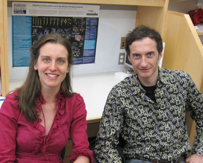

News Archives : 2010 : The Chromatin Signature of Pluripotent Cells
by Alexander Schier and Nadine Vastenhouw
March 24, 2010

(L to R)Nadine Vastenhouw and Alexander Schier
The genomes of most animals are inactive for hours or days after fertilization. Transcription is only initiated during the maternal-zygotic transition and coincides with the formation of pluripotent cells. Nadine Vastenhouw and Alexander Schier in MCB, along with their collaborators, used zebrafish embryos to study the chromatin states during genome activation and the emergence of pluripotency (Nature).
Much of our knowledge of pluripotency originates from studies in cultured embryonic stem (ES) cells. Analysis of chromatin states across the ES cell genome has suggested that pluripotent cells have a unique chromatin signature. In particular, the promoters of many genes that regulate development contain repressive chromatin marks in combination with active marks. Such “bivalent” genes are thought to be transcriptionally inactive, yet poised for imminent activation. Permanently pluripotent cells such as ES cells do not exist in vivo, and it has therefore been unclear whether embryonic cells have the same chromatin profile as ES cells.
To address this question, Nadine Vastenhouw and her colleagues analyzed the chromatin structure of pluripotent cells in the zebrafish embryo. The study found bivalent chromatin domains that were associated with developmental regulatory genes, suggesting that these domains are not simply an artifact of cultured cells. The research also indicated that many inactive genes in zebrafish and ES cells carried “monovalent” chromatin marks; i.e. active, but not repressive, chromatin modifications. Further studies suggested that these chromatin marks are only established during the maternal-zygotic transition and could be established in the absence of specific transcriptional regulators. Taken together, these results suggest that the chromatin signature of pluripotency is established during the maternal-zygotic transition and poises embryonic genes for activation. While these studies are fundamental in nature, they may also inform strategies to more efficiently reprogram differentiated cells into pluripotent cells, one of the goals of regenerative medicine.
The Schier group collaborated with Yong Zhang and X. Shirley Liu of the Department of Biostatistics and Computational Biology at Harvard Medical School and John Rinn and Aviv Regev of the Broad Institute of MIT and Harvard. Schier lab members and co-authors Ian Woods and Farhad Imam also made important contributions to the research.
Read more in Nature